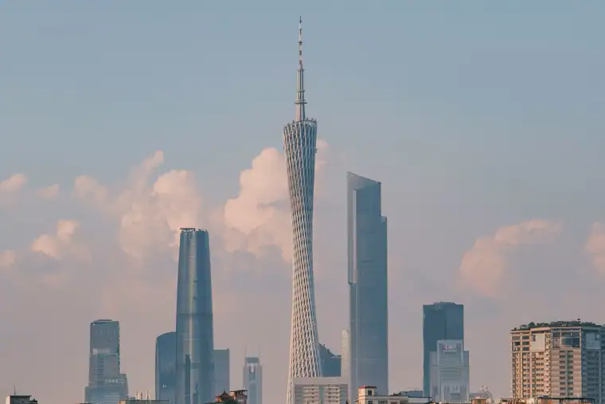
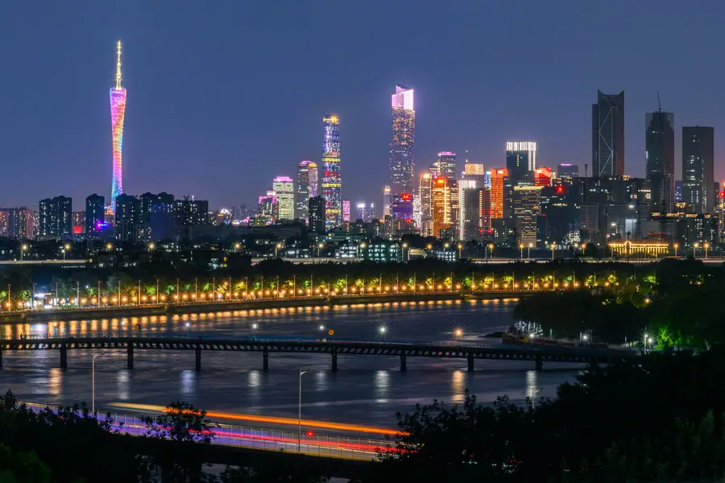
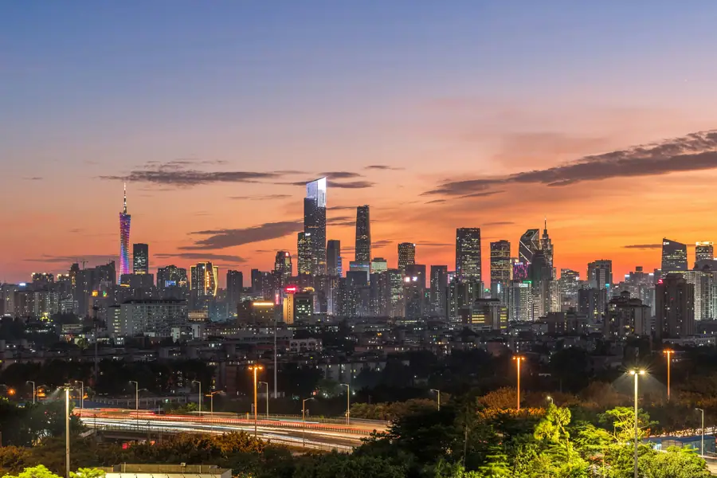

Guangzhou Airport Transfer & Private Car
Baiyun (CAN) to downtown, Canton Fair, and Shamian Island with licensed professional driver. Home of Dim Sum, Canton Tower, and the Pearl River. Fixed price. Reliable Guangzhou car service for every trip. Book a private car in Guangzhou with just a few clicks. Pick-up and drop-off in Guangzhou, door to door.
Guangzhou in Pictures
Real scenes from Guangzhou — landmarks, streets and everyday life.



Guangzhou at a Glance
China's southern gateway — the birthplace of Cantonese cuisine and the world's largest trade fair. Reliable Guangzhou car service for every trip. Book a private car in Guangzhou with just a few clicks. Pick-up and drop-off in Guangzhou, door to door.
Name Origin
The name "Guangzhou" (广州) means "Broad Prefecture." The city was also known as Canton (from the Portuguese "Cantão"), which gave its name to Cantonese cuisine, Canton Fair, and the Cantonese language. Founded over 2,200 years ago during the Qin Dynasty, it has been a major trading port since the Han Dynasty. The Silk Road started here by sea, and it was one of China's first ports opened to foreign trade in the 18th century.
Education & Universities
Guangzhou is home to Sun Yat-sen University (founded 1924, ranked top 10 in China), one of the country's most prestigious institutions. South China University of Technology and Jinan University (founded 1906, one of China's oldest) are also highly regarded. The city's universities excel in medicine, business, and engineering. Guangzhou is also a major center for international education with many foreign students.
Metro & Transportation
Guangzhou's metro system has 16 lines covering 600+ km, one of China's busiest. The airport line connects Baiyun Airport (CAN) to the city center in 30 minutes. The city is also a major hub for China's high-speed rail network, with direct connections to Hong Kong (1 hour), Shenzhen (30 minutes), and Guangzhou (8 hours). However, during the Canton Fair (April and October), the metro is extremely crowded — a private car is essential for business travelers.
Natural Resources & Environment
Guangzhou sits on the Pearl River Delta, the most fertile and productive region in southern China. The Pearl River (Zhujiang) flows through the city, creating a network of waterways that have shaped the city's development for 2,000 years. The city has a humid subtropical climate with hot summers and mild winters. Baiyun Mountain (White Cloud Mountain) rises on the northern edge of the city, offering a green escape from the urban bustle.
🗺️ Maps & Transit
Plan your route before you arrive. Download the official metro maps and city maps below.
Best Time to Visit guangzhou
guangzhou runs from 14.1 °C in January to 29.4 °C in July, an annual average of 22.8 °C and about 1,926 mm of rain across the year. The chart and the four seasons below are built from the city’s own climate record.
July is the warmest month at 29.4 °C and January the coldest at 14.1 °C, a spread of 15.3 °C.
The seasonal swing here is 15.3 °C between January and July, which is narrow enough that most of the year suits a visit.
Private transfers are booked by pickup time rather than by season, so the weather only changes what you do with the hours you have. In January a driver waiting at the terminal matters, because the afternoon average sits around 14.1 °C; by July the same day averages 29.4 °C and the car is most of the day’s comfort.
Spring
March, April, May · avg 22.7 °C
March averages 18.9 °C and May 26.4 °C, so the season warms fast.
Summer
June, July, August · avg 28.8 °C
July peaks at 29.4 °C, the warmest point of the whole year.
Autumn
September, October, November · avg 24.4 °C
September averages 27.9 °C and November 20.2 °C.
Winter
December, January, February · avg 15.4 °C
January bottoms out at 14.1 °C, the coldest point of the whole year.
Top Guangzhou Attractions
Discover the best of Cantonese culture with a private driver.
Canton Tower
600m Tall • Pearl River
One of the world's tallest towers at 600 meters, offering panoramic views of the Pearl River Delta. The tower features a revolving restaurant, observation deck, and a skywalk. At night, it's illuminated with a spectacular LED light show. Your driver can arrange an evening visit with a riverside dinner.
🏝️ Shamian Island
Colonial District • European Architecture
A former British and French concession with well-preserved colonial architecture from the 19th century. Tree-lined streets, Victorian buildings, and a peaceful atmosphere make it a unique oasis in the bustling city. Your driver can drop you off for a leisurely stroll and pick you up after lunch at one of the charming riverside cafés.
🏛️ Chen Clan Ancestral Hall
Qing Dynasty • Folk Art Museum
A magnificent Qing Dynasty complex built in 1894, showcasing the finest examples of Cantonese decorative arts including wood carving, brick carving, and ceramic sculpture. Now a folk art museum, it's considered the best-preserved traditional architecture in Guangdong Province. Your driver can combine this with a visit to the nearby Liwan Lake.
⛰️ Baiyun Mountain
White Cloud Mountain • Nature Escape
Known as the "City's Lung," Baiyun Mountain rises on the northern edge of Guangzhou, offering hiking trails, temples, and panoramic views of the city. The cable car provides easy access to the summit. Your driver can take you to the entrance and wait while you explore the mountain's scenic spots.
🏝️ Canton Fair (Pazhou Complex)
World's Largest Trade Fair • Twice Yearly
The China Import and Export Fair, known as the Canton Fair, is the world's largest trade fair held every April and October. Over 25,000 exhibitors and 200,000 buyers attend. Our private car service is the most reliable transportation during the fair, with drivers who know the Pazhou Complex well and can avoid traffic.
🌊 Pearl River Night Cruise
Night Cruise • Skyline Views
A night cruise along the Pearl River offers the best views of Guangzhou's illuminated skyline, including the Canton Tower, Liede Bridge, and the historic buildings along the waterfront. Your driver can drop you at the Tianzi Wharf and pick you up after the cruise for a seamless evening experience.
Popular Guangzhou Routes
Fixed-price private car service for Guangzhou's most popular journeys.
CAN Baiyun Airport → Downtown
From ¥295 (≈ $41.55)~30 km · 40–60 min
Baiyun International Airport (CAN) is Guangzhou's main airport and one of China's busiest. Our private car picks you up at the arrival hall, tracks your flight for delays, and delivers you directly to your hotel in Tianhe, Yuexiu, or Haizhu districts. Essential during Canton Fair when public transport is overwhelmed.
🏝️ Guangzhou → Shenzhen Transfer
From ¥351 (≈ $49.44)~140 km · 2 hours · Door-to-door
The intercity transfer between Guangzhou and Shenzhen is one of the most popular routes for business travelers. Our private car service offers a comfortable alternative to crowded trains. Your driver picks you up at your Guangzhou hotel and delivers you to your Shenzhen destination. Flexible departure times.
🏝️ Guangzhou → Kaiping Diaolou
From ¥728 (≈ $102.54)~150 km · 2 hours · 8-hour day trip
Visit the Kaiping Diaolou, a UNESCO World Heritage site featuring unique fortified watchtowers built by overseas Chinese in the early 20th century. A fascinating architectural blend of Chinese and Western styles. Your driver takes you from Guangzhou, waits while you explore, and returns you to the city.
🏝️ Guangzhou City Tour (Full Day)
From ¥728 (≈ $102.54)8 hours · Business vehicle · Custom itinerary
Visit the Canton Tower, Shamian Island, Chen Clan Ancestral Hall, Baiyun Mountain, and enjoy a Dim Sum lunch in one day. Your driver knows the best Dim Sum restaurants and the timing to avoid crowds at each attraction. Add a Pearl River night cruise for an unforgettable evening.
Transparent Pricing in Guangzhou
Published rates, no estimate games. Check the numbers yourself before you book — and the price you see is the price your driver is paid from.
Fixed Price List — 广州市 (Guangzhou)
Published rates from our 2026 quote sheet. Renminbi first, USD for reference at 1 USD = ¥7.10. Every price below already includes tolls, parking, driver service and free airport waiting time (up to 60 minutes after your flight lands) — nothing is added on the day.
🛬 Airport & Intercity Transfer
One flat fare for airport pickup, drop-off or city-to-city — intercity costs the same as the airport run. 35 km and 60 minutes included; beyond that we charge by the minute and the kilometre at the rates shown.
| Vehicle | Seats | Bags | Fixed fare | USD | Beyond 35 km / 60 min |
|---|---|---|---|---|---|
| 4座 经济型专车 | 4 | 2 | ¥295 | ≈ $41.55 | ¥1.44/min · ¥6.52/km |
| 4座 舒适型专车 | 4 | 2 | ¥421 | ≈ $59.3 | ¥1.59/min · ¥7.21/km |
| 6座 商务车 | 6 | 3 | ¥525 | ≈ $73.94 | ¥1.69/min · ¥7.67/km |
| 8-11座 商务车 | 11 | 4 | ¥749 | ≈ $105.49 | ¥2.2/min · ¥9.97/km |
| 12-18座 商务车 | 18 | 4 | ¥874 | ≈ $123.1 | ¥2.45/min · ¥11.12/km |
| 19-55座 大巴 | 55 | 5 | ¥1061 | ≈ $149.44 | ¥2.79/min · ¥12.66/km |
🚗 Hourly Private Charter
Book the car and the hours, keep the car for the day. Unused kilometres can be carried into the next tier, so a long day never turns into a penalty. The driver stays with you — you set the stops.
| Vehicle | 2h / 35km | 4h / 50km | 6h / 75km | 8h / 100km | 10h / 125km |
|---|---|---|---|---|---|
| 4座 专车 | ¥351 | ¥572 | ¥624 | ¥728 | ¥884 |
| 6座 商务车 | ¥455 | ¥741 | ¥806 | ¥949 | ¥1144 |
| 8-11座 商务车 | ¥655 | ¥1067 | ¥1161 | ¥1367 | ¥1647 |
| 12-18座 商务车 | ¥786 | ¥1280 | ¥1393 | ¥1640 | ¥1977 |
| 19-55座 大巴 | ¥943 | ¥1537 | ¥1671 | ¥1968 | ¥2372 |
Why travellers book Guangzhou with Chinawheely
Six things you get with every booking — in Guangzhou and across all 333 cities on the platform.
Licensed travel agency, not a ride-hail app
Chinawheely is a registered travel agency (L-HUB-101603). Your booking is a travel contract with a licensed operator — not a broker handing your number to whoever answers the phone.
One locked price, shown before you pay
The price you see is the price you pay. Tolls, parking, driver service and airport waiting time are already inside it. No surge pricing, no meter, no cash-on-the-day surprise.
Flight tracked, waiting time on us
We watch your flight number in real time. If it lands late or is delayed, your driver shifts with it and the waiting time stays on us — not on your bill.
A licensed driver who knows the city
Every car is driven by a professional local driver who knows the routes, the shortcuts and the parking that actually works near the attractions — with English communication and a name board on arrival.
Free changes up to 48 hours before
Plans move. Reschedule or cancel any booking free of charge up to 48 hours before your scheduled pickup, straight from your confirmation link.
A real human on WhatsApp, 8AM–12AM Beijing time
One message reaches a person who can re-price, re-route or re-plan your trip on the spot. No ticket queue, no chatbot loop.
Book Guangzhou at the published price
Pick your vehicle, see the fare line by line, and pay by PayPal or Alipay. Free changes up to 48 hours before pickup — or ask on WhatsApp and we will hold a car for you.
The quote is valid for 48 hours, and you can change or cancel free up to 48 hours before pickup.
Getting to Guangzhou: Airports & Railway Stations
Getting to Guangzhou by air, rail, or road
✈️ Airports
🏝️ Guangzhou Baiyun International Airport (CAN)
North of the city · 30 km to Canton Tower
CAN is one of China's busiest airports and the main hub for southern China. It has two main terminals: Terminal 1 (domestic flights) and Terminal 2 (international and some domestic flights, opened in 2018). The airport metro line connects to the city center in 30 minutes, but with luggage a private car is far more comfortable. By road, expect 40–60 minutes to Tianhe or Yuexiu districts.
🛕 Guangzhou Baiyun Airport (Future Expansion)
Growing capacity · Third terminal planned
Baiyun Airport is expanding rapidly to serve the Greater Bay Area. The existing terminals handle flights to Southeast Asia, Europe, Australia, and Africa. During the Canton Fair (April and October), the airport is extremely busy — pre-booking a private car is essential.
🚄 Railway Stations
🏝️ Guangzhou South Station
High-speed hub · 40 min to Canton Tower
The main station for high-speed trains to Shenzhen (30 min), Hong Kong (1 hour), Guangzhou (8 hours), and Wuhan (4 hours). It's one of Asia's largest stations. A private car pickup is strongly recommended during Canton Fair.
🏝️ Guangzhou East Station
Central station · 15 min to Tianhe CBD
Located in the Tianhe district, this station serves conventional trains to eastern and northern China, as well as direct trains to Hong Kong (Hung Hom). Its central location makes it convenient for business travelers staying in Tianhe.
🏝️ Guangzhou Station
Historic main station · Yuexiu District
The city's oldest main station, serving conventional trains to western and northern China. It's located near the city center and is convenient for hotels in Yuexiu and Liwan districts.
🏝️ Guangzhou North Station
Regional trains · Huadu District
Mainly serves regional trains to northern Guangdong and connections to the airport. Less frequently used by tourists but useful for certain regional routes.
🗼 Panyu Station
Suburban HSR · Near Chimelong
Serves high-speed trains on the Guangzhou–Shenzhen–Hong Kong line. Convenient for travelers visiting Chimelong Paradise or staying in the Panyu district.
🗼 Need a Station Pickup?
We meet you at the exit with a name board and help with luggage.
Book Station TransferIntangible Cultural Heritage & Living Crafts of Guangzhou
Meet the traditional arts that have defined Guangzhou for centuries — and the artisans keeping them alive.
🎭 Cantonese Opera (Yueju)
UNESCO-listed intangible heritage. Cantonese Opera is one of China's major opera genres, known for its elaborate costumes, face painting, and unique singing style. It combines martial arts, acrobatics, and music, with stories drawn from Chinese history and folklore.
Where to experience it: Guangzhou Opera House, Hong Xian Nu Art Center, or the Lychee Bay Theatre. Ask your driver to book tickets.
🧵 Cantonese Embroidery (Yue Xiu)
One of China's four great embroidery styles, Cantonese embroidery is known for its vivid colors, three-dimensional effects, and extensive use of gold and silver thread. The technique originated in the Pearl River Delta over 1,000 years ago.
Where to find it: Guangdong Folk Art Museum, Chen Clan Ancestral Hall, or specialty embroidery shops on Shangxiajiu Pedestrian Street.
🎨 Ivory Carving (Guangzhou Style)
Guangzhou has been a center for ivory carving for centuries, with artisans creating intricate balls-within-balls, miniature boats, and detailed figurines. Note: Due to international regulations, modern carvings use mammoth ivory or synthetic materials. The skill and artistry remain extraordinary.
Where to find it: Guangzhou Museum and select cultural heritage shops. Always verify the material source.
🎋 Canton Enamel (Guangcai)
A distinctive style of porcelain enamel decoration that developed in Guangzhou during the Qing Dynasty. Guangcai features bright colors, heavy gold outlines, and Western-influenced designs, reflecting the city's role as a trading port. It was originally produced for export to Europe.
Where to find it: Guangzhou Museum, Chen Clan Ancestral Hall, and select antique shops in Liwan District.
🎤 Cantonese Music (Guangdong Yinyue)
A traditional instrumental music style featuring the erhu, pipa, yangqin, and gaohu. Cantonese music is characterized by its bright, lively melodies and complex ornamentation. It developed in the teahouses and theaters of Guangzhou in the late 19th century.
Where to experience it: Traditional teahouses in Liwan District, or during the Spring Festival temple fair at Chen Clan Ancestral Hall.
🪡 Woodblock New Year Prints (Foshan)
Though originating in nearby Foshan, this traditional art form is closely tied to Guangzhou culture. Hand-carved woodblocks are used to print colorful New Year images of door gods, auspicious animals, and scenes of prosperity. The technique has been practiced for over 500 years.
Where to find it: Foshan Woodblock Print Museum (30 min from Guangzhou) or folk art shops in the old city.
Guangzhou Local Secrets
Insider tips to help you experience Guangzhou like a local.
Eat Dim Sum Like a Local
Skip the hotel breakfast and go to a traditional teahouse for yum cha (drinking tea). The best time is 8–10 AM on weekends when families gather. Try shrimp dumplings (har gow), BBQ pork buns (char siu bao), and egg tarts. Your driver knows the best old-school teahouses.
Walk the Pearl River at Night
The riverside promenade from Shamian Island to the Canton Tower is beautifully lit and surprisingly peaceful after 9 PM. The breeze from the river and the illuminated skyline make for a perfect evening stroll.
Bargain at Qingping Market
The Qingping Medicine Market is a fascinating cultural experience. Start at 50% of the asking price and walk away if they don't budge. Your driver can help you negotiate and ensure you get authentic products, not tourist traps.
Seasonal Highlights
Spring: Kapok flowers along the Pearl River. Summer: Lotus at Lychee Bay. Autumn: Chrysanthemum shows at Baiyun Mountain. Winter: Warm claypot rice and ginger milk curd.
Avoid Canton Fair Dates Unless Business
The Canton Fair (mid-April and mid-October) makes everything more expensive and crowded. Hotels triple their rates, and traffic is gridlocked. If you're not attending the fair, visit a week before or after.
Day Trip to Kaiping Diaolou
The UNESCO-listed fortified watchtowers of Kaiping are a 2-hour drive from Guangzhou. Your driver can take you through the countryside to explore these unique buildings, have lunch at a local village restaurant, and return by evening.
Day Trips from Guangzhou
Real destinations around Guangzhou, reached comfortably with a private car and a licensed professional driver.
Best season to travel in Guangzhou
🍂 Best Season October – December / March – April — Autumn (October–December) when humidity drops, temperatures are comfortable (15°C–28°C), and the city hosts the Canton Fair. Spring (March–April) is equally pleasant for sightseeing.
Warm and comfortable with blooming jacaranda trees across the city. Pleasant for walking Shamian Island and exploring Yuexiu Park.
The monsoon season brings frequent rain and high humidity. Indoor attractions like the Guangdong Museum are preferable.
Hot, humid, and prone to typhoons. Early morning sightseeing and indoor activities during afternoon heat recommended.
The best time to visit. Dry, sunny days with comfortable temperatures. The Canton Fair (Oct–Nov) brings global visitors and excellent business networking opportunities.
🧧 Chinese New Year 2027 in Guangzhou
Chinese New Year 2027 falls on January 29, 2027 -- the first day of the Year of the Snake on the Chinese lunar calendar. Guangzhou's Chinese Spring Festival 2027 is famous for its magnificent Cantonese flower markets, traditional Cantonese opera, and the unique traditions of the Pearl River Delta. Keywords: when is chinese new year 2027, chinese new year 2027, chinese spring festival food, chinese spring festival facts.
Chinese Spring Festival Facts
When is Chinese New Year 2027? January 29, 2027
Chinese New Year 2027 is January 29, 2027. Guangzhou is famous for its unique Spring Festival traditions including the famous Cantonese flower markets. January is warm (15-20C) making it ideal outdoor festival weather.
Cantonese Spring Festival Flower Markets (花市)
Guangzhou is famous for its flower streets (花街) -- enormous night markets selling flowers, potted plants, and peach blossoms. The Guangzhou Spring Flower Market runs January 25-28. Families buy flowers symbolising good fortune.
Cantonese Reunion Dinner -- Most Lavish in China
Guangzhou's Cantonese are famous for their food. The Spring Festival reunion dinner (年夜饭) is the most elaborate of the year. Chinese spring festival food includes wonton noodles (云吞面), steamed whole fish, and bai he geng.
Red Packets -- Lai See (利是)
Cantonese call red packets lai see (利是/luck money). Given by married couples to unmarried family members and by employers. Amounts typically 20-500 yuan. WeChat digital red packets are extremely popular.
Top Spring Festival Activities
Tianhe Spring Flower Market (天河花市)
Guangzhou's largest Spring Festival flower market in Tianhe District. Open 24 hours on the last three nights before CNY. Millions of flowers, kumquat plants, and orchids for sale. Expected 2027: January 25-28. Metro: Tianhenan Road (Line 3).
Cantonese Opera at Guangdong Arts Centre
Special Cantonese opera (粤剧) performances at the Guangdong Arts Centre throughout the Spring Festival. Repertoires include The Butterfly Lovers (梁祝). Expected 2027: January 29-February 3. Metro: Zhujiang New Town (Line 3/5).
Shamian Island European Heritage Decorations
The historic Shamian Island (沙面) with its European colonial architecture is beautifully decorated for Spring Festival -- red lanterns and Chinese knots line the streets. Free and open throughout the holiday.
Pearl River New Year Fireworks
The Pearl River is lit up at midnight on New Year's Eve. Best viewing: riverbank near Haizhu Bridge and at Canton Tower (广州塔). The Canton Tower also has special Spring Festival illuminations.
Must-Try Spring Festival Food
Wonton Noodles (云吞面)
A Cantonese Spring Festival staple -- delicate wontons with thin egg noodles in a rich pork and dried seafood broth. Wonton (云吞) symbolises togetherness.
Tip: Best at: Tao Tao Ju (陶陶居) or Lai Wah Heen (荔湾名点)
Steamed Whole Fish (清蒸鱼)
Cantonese always serve a whole steamed fish at reunion dinner -- symbolising surplus and abundance. Most popular choice is sea bass or grouper, steamed with ginger and spring onion.
Tip: Order at: Cantonese restaurants like Pan Pacific or Dim Sum Grand
Kumquat Plant (年橘)
Guangzhou families buy kumquat plants (年橘) for Spring Festival -- the golden fruits symbolise wealth and good fortune. Thousands flood the flower markets. Also given as business gifts.
Tip: Available at all Guangzhou Spring Flower Markets, January 25-28
Cantonese Nian Gao (年糕)
Cantonese Nian Gao is softer and sweeter than northern versions -- made with brown sugar and ginger. Pan-fried until caramelised. Symbolises better year after year.
Tip: Buy at dim sum restaurants and bakeries from mid-January
Traditional Customs
Visiting the Flower Markets -- Xing Hua Shi (行花街)
The Cantonese tradition of walking through flower markets (行花街/xing huajie) is essential. Families walk through markets in their finest clothes buying flowers. Symbolises walking into prosperity for the new year.
Lai See Red Packets (利是)
Cantonese red packets are called lai see (利是). Given by married couples to unmarried family and by employers to employees. Smaller amounts than northern China -- typically 20-500 yuan.
Cantonese Opera on TV (粤剧)
Cantonese opera performances are broadcast on Guangdong TV throughout the Spring Festival. Families gather around the TV to watch these traditional performances -- a uniquely Cantonese way to celebrate.
Three-Day Family Reunion (拜年)
In Guangzhou, the first three days of Spring Festival are for family reunions. On January 29, families visit the eldest members. The second and third days are for visiting friends and colleagues.
Visa & Entry Information for Guangzhou
Plan your China trip with confidence -- everything you need to know about visas, border crossings, and getting to Guangzhou.
China Visa Guide
Complete guide to tourist visas, business visas, application process, and 144-hour transit visa-free access at major Chinese cities.
Embassies & Consulates
Find Chinese embassies and consulates worldwide -- including USA, UK, Canada, Australia, Germany, France, Japan, South Korea and more.
Entry & Travel Guide
From airport immigration to paying with your phone -- everything you need to know before and after arriving in China.
Chat on WhatsApp

Scan the QR code with WhatsApp to add us and start chatting.
Or add us directly: +86-155-2777-1775
Open WhatsApp Chat🏆 Major Sports Events in Guangzhou
Guangzhou is southern China's sports capital -- home to the Canton Derby football rivalry, Guangzhou Evergrande FC, and the Guangzhou Loong Lions CBA team. Tianhe Stadium is one of China's most iconic sports venues.
Guangzhou Marathon (广州马拉松)
2026: December (annual, World Athletics Gold Label)
One of China's three major marathons -- the Guangzhou Marathon (广州马拉松) is a World Athletics Gold Label event. Course passes the Canton Tower, Pearl River, Haizhu Bridge, and Tianhe CBD. 30,000 runners. Registration opens August.
Venue: Start: outside CITIC Tower; Finish: Guangdong Provincial Sports Centre. Metro: Tianhenan Road.
Chinese Super League Football (中超联赛 – 广州恒大)
2026 season: March to November
Guangzhou Evergrande FC (广州恒大) dominated Chinese football (8 CSL titles 2012-2019) and continues to compete at Tianhe Stadium (天河体育中心). The Canton Derby against Shenzhen and Foshan is always intense.
Venue: Tianhe Stadium (天河体育中心), Tianhe District. Metro: Tianhe Sports Centre (Line 1).
Guangzhou Loong Lions CBA Basketball (广州龙狮)
2026-2027 season: October 2026 to May 2027
The Guangzhou Loong Lions (广州龙狮) play at the Tianhe Sports Centre (天河体育中心). One of China's most atmospheric basketball venues. Competitive roster for 2026-2027.
Venue: Tianhe Sports Centre (天河体育中心), Tianhe District. Metro: Tianhe Sports Centre (Line 1).
Guangzhou Horse Racing Festival (广州赛马节)
2026-2027 season: select weekends, October to May
Guangzhou's horse racing tradition dates to the Qing dynasty. The Guangzhou Racecourse (广州赛马场) hosts regular meetings on select weekends. One of the few legal horse racing venues in mainland China.
Venue: Guangzhou Racecourse (广州赛马场), Tianhe District. Metro: Linhe (Line 3/APM).
Canton Derby – Guangzhou vs Shenzhen vs Foshan (珠三角德比)
2026 season: March to November
The Canton Derby between Guangzhou Evergrande, Shenzhen FC, and Foshan Yunduan is the most passionate football rivalry in southern China. Atmosphere at Tianhe Stadium on derby days is electric.
Venue: Tianhe Stadium (天河体育中心). Metro: Tianhe Sports Centre.
🎭 Concerts & Performances in Guangzhou
Guangzhou has a vibrant year-round performing arts scene from world-class symphony orchestras and international pop concerts to traditional cultural shows and annual arts festivals. Here is your guide to the best live performances in Guangzhou.
🎭 Opera & Ballet
Guangzhou Opera House Performance Season
World famous opera house designed by Zaha Hadid. Hosts world-class opera, ballet, musical theatre, concerts. Productions include La Boheme, Carmen, international Broadway tours. Peak season Oct-Dec.
Venue: Guangzhou Opera House (Zhujiang New Town)
Season: Year-round (peak: Oct-Dec)
🎸 Pop & Rock Concerts
Guangzhou International Sports Arena Concerts
Guangzhou 18,000-seat arena. Most important concert venue in South China. Has hosted Eason Chan, Jacky Cheung, Leon Lai, K-pop and international acts.
Venue: Guangzhou International Sports Arena
Season: Year-round
🎻 Classical Music & Symphony
Xinghai Concert Hall Classical Season
Named after composer Xian Xinghai. Home to Guangzhou Symphony Orchestra. 1,538-seat concert hall with superb acoustics. International soloists and orchestras year-round. Classical season Sep-Jun.
Venue: Xinghai Concert Hall
Season: Year-round (Sep-Jun classical)
🎵 Music & Arts Festivals
Guangzhou flagship annual arts festival every autumn. Opera, drama, dance, puppetry from international and Chinese companies. 6 weeks across all major Guangzhou theatres.
Venue: Guangzhou Opera House and city theatres
Season: September-October annually
🎭 Traditional Cultural Performances
Premier venue for authentic Cantonese opera (Yueju). Daily performances include The Legend of the White Snake and The Peony Pavilion. UNESCO intangible cultural heritage.
Venue: Guangdong Cantonese Opera Theatre
Season: Year-round (daily)
Attend a Guangzhou Concert with a Private Car
Avoid metro crowds after the show. Our licensed professional driver will drop you at the door and pick you up after. Available for all venues in Guangzhou.
Book Concert Transfer⚽ Major Sports Events in Guangzhou
Guangzhou hosts an impressive calendar of major sports events throughout the year. From professional football and basketball to international marathons and winter sports, here is your complete guide to sports in Guangzhou for 2026 and 2027.
⚽ Football & Soccer
Chinese Super League (CSL) - Guangzhou FC Home Matches
Season: March-November 2026 Year: 2026
Guangzhou FC (formerly Evergrande) is most successful club in Chinese football history with 8 CSL titles and 2 AFC Champions League titles (2013, 2015). Home games at 55,000-seat Tianhe Stadium always packed. 2026 season: March-November.
Venue: Tianhe Sports Centre Stadium
🏀 Basketball
CBA - Guangdong Southern Tigers / Guangzhou Loong Live Games
Season: October 2026 - May 2027 Year: 2026-2027
Guangzhou home to two CBA teams: legendary Guangdong Southern Tigers (11-time champions) and Guangzhou Loong. Guangdong Southern Tigers are most successful club in Chinese basketball history. 2026-2027 season: October-May.
Venue: Tianhe Sports Centre Gymnasium
🏃 Marathons & Running
Guangzhou International Marathon
Season: December annually (2026 TBC) Year: 2026
One of China most scenic marathons past Canton Tower, Zhujiang New Town, Haixinsha Island. Attracts 30,000+ runners, IAAF Gold Label certified.
Venue: Zhujiang New Town to Haixinsha Island
⛵ Sailing & Water Sports
Nansha International Sailing Race
Season: November-December annually Year: 2026
Southern China premier international sailing competition in Nansha waters. Features yacht races, sailing regattas, watersports across multiple classes.
Venue: Nansha Harbor, Pearl River Delta
🚴 Cycling
Guangzhou World Cycling Tour (UCI World Tour)
Season: November annually Year: 2026
Part of UCI World Tour circuit. Attracts professional and amateur cyclists from around the world on fast, flat urban circuit showcasing Guangzhou modern infrastructure.
Venue: Pearl River New Town Circuit
Get to Guangzhou Sports Events with a Private Car
Avoid metro crowds on match day. Our licensed professional driver takes you door to venue and back. Available for all stadiums, arenas, and courses in Guangzhou.
Book Sports Transfer☕ Tea Culture & Tea House Guidein Guangzhou
Guangzhou has a long tea tradition. Pu-erh is what you will find most often in the city's tea houses — some are local products, others are the everyday teas carried in from the producing areas. This guide covers where to drink them, what to order, and how the customs work.
☕ Pu-erh & Dark Tea
Cantonese Morning Tea Culture (粤式早茶)
Venue: Lou Lim Leung (趣香楼), Tao Tao Ju (陶陶居), Lihua Teahouse Hours: Daily 07:00-14:00 (morning tea is breakfast/lunch tradition)
Guangzhou is birthplace of Cantonese Dim Sum and Morning Tea (早茶) culture, one of Chinas most beloved culinary traditions. Locals gather in teahouses (茶楼) from 7am for tea and steamed dumplings, siu mai, char siu bao, and egg tarts. The ritual of yum cha (饮茶) is a daily social institution.
Guangzhou Pu-erh Tea Culture
Venue: Shangxiajiu Pedestrian Street, Tea market in Liwan District Hours: Year-round
Guangzhou is one of most important pu-erh tea markets in China. The humid subtropical climate of Guangdong is ideal for aging pu-erh tea, and many families have been collecting and aging pu-erh cakes for decades. City is home to major pu-erh trading houses and hosts tea exhibitions throughout the year.
☕ Premium Green Tea
Lianzhoucha (莲珠茶) and Guangdong Green Tea
Venue: Teahouses in Liwan and Yuexiu districts Hours: Year-round
Guangdong province produces several distinctive teas including Lianzhoucha (连珠茶) from Shaoguan and Xinfeng County green tea. While not as internationally famous as Longjing, these regional teas have loyal local following and represent unique terroir of the Pearl River Delta.
⭐ Tea Experiences
Guangzhou Tea Museums - Guangdong Tea Culture Museum
Venue: Guangzhou Baiyun District Hours: Tuesday-Sunday 09:00-17:00
The Guangdong Tea Culture Museum showcases history and culture of tea in Guangdong province including unique morning tea tradition, regional tea varieties, and history of Silk Road tea trade. Exhibits include antique tea sets, historical documents, and interactive tea-making demonstrations.
Cantonese Tea Etiquette - Knocking Fingers (叩手礼)
Venue: All traditional Guangzhou teahouses Hours: Year-round
Guangzhou has developed distinctive tea culture with unique etiquette. When tea is poured for you, tap two fingers on the table as sign of respect (叩手礼). Tea is always poured for others before yourself. City is famous for handcrafted Yixing clay teapots (宜兴紫砂壶) prized by tea connoisseurs.
Experience Guangzhou Tea Culture with a Private Car
Let our licensed professional driver take you to the best teahouses, tea markets, and tea villages in Guangzhou. No navigating unfamiliar streets — door to door, in comfort.
Book Tea TourMore Guangzhou Guides & Transfers
Airport transfers, day trips and practical guides for Guangzhou — pick the one that matches your itinerary, then book the car in a minute.
Guangzhou Airport Transfer to Canton Tower
Book Guangzhou Airport Transfer To Canton Tower private car service with licensed driver
Best Time to VisitBest Time to Visit Guangzhou
Book Guangzhou Best Time private car service with licensed driver
Day TripsDay Trips from Guangzhou
Book Guangzhou Day Trips private car service with licensed driver
Food & ShoppingFood & Shopping Guide 🍽 Guangzhou
Book Guangzhou Food Shopping private car service with licensed driver
Photo SpotsBest Photo Spots Guangzhou
Book Guangzhou Photo Spots private car service with licensed driver
Tea CultureGuangzhou Tea Culture & Tea House Guide
Book Guangzhou Tea Culture private car service with licensed driver
More China destinations
Compare routes, published prices and local driver tips across the cities we cover.